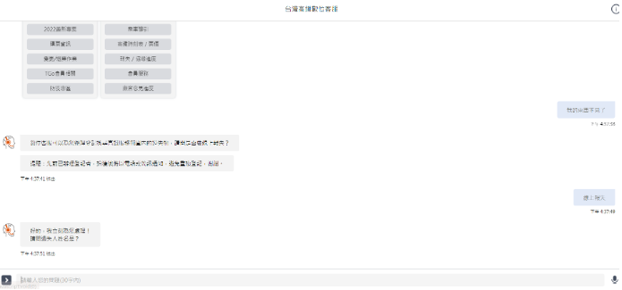

受COVID-19疫情影響，許多人為保持「社交距離」而改變使用大眾運輸工具的習慣，民眾少出門、多開車的改變，使得大眾運輸運量大幅降低，因應零零星星的乘客，高鐵持續實施減班策略，也已啟動人員分流執勤。因應人員分流執勤，高鐵將如何利用聊天機器人，紓解龐大的客服量，更能提供客戶最即時的回覆服務呢？
數位客服｜聊天機器人特點
若有即時需求，除了撥打客服專線外，還推出24小時線上「數位客服」，提供中英語系服務，累積各種旅客常見問題知識庫，結合創新數位科技，引進大數據分析整理、自然語音與文字處理、機器學習等技術建置的數位客服，降低人工電話客服的處理，也使答覆旅客的資訊更標準且精準，讓數位客服的隨時隨行更能滿足顧客即時需求。
數位客服｜有效即時解決問題
透過聊天機器人的線上一問一答，自動引導訪客找到問題與解答，如此一來即省下了大量的客服人力資源。
常見問題諮詢包括高鐵會員服務、票務規則、車班時刻表、折扣優惠、乘車引導、年長與行動不便者輪椅服務，以及物品報失等，輸入簡單的文字或語音，就獲得解決問題的答覆。
例如旅客在旅途中遺失物品，可透過「數位客服」辦理報失，系統將逐步引導旅客完成相關資訊登記與確認後，提供報失單編號給旅客作為後續查詢使用，而高鐵另一端在有拾獲遺失物品時，也會建立資料並進行比對，比對成功就會依報失單的聯絡資訊通知旅客領取等，大幅簡化作業程序。

如提問超出聊天機器人可處理範圍，則會轉接線上真人文字客服（服務時間為每天6時至24時）繼續提供協助，縮短旅客線上等候服務時間。未來這個聊天機器人將擴大數位應答服務領域及範圍、旅客資訊動態查詢，同時也能整合不同訂位通路，根據資料分析來進行分群行銷。
Ai3智能機器人也能應用在交通產業上，提供乘客在旅途中相關需求，從車程安排、票務查詢、會員服務、車站資訊和最新優惠促銷等內容，在購票完成需線上客服人員確認時，客戶資料和對話紀錄也能留存整合。
📍點此觀看🔍聊天機器人懶人包
其他文章